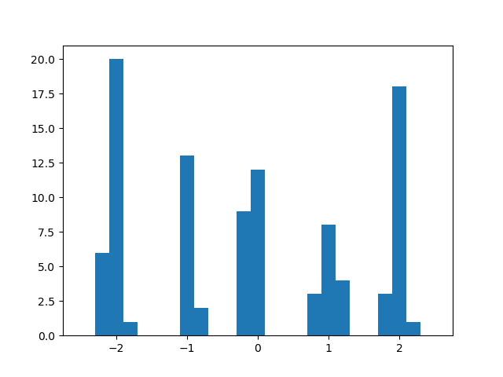
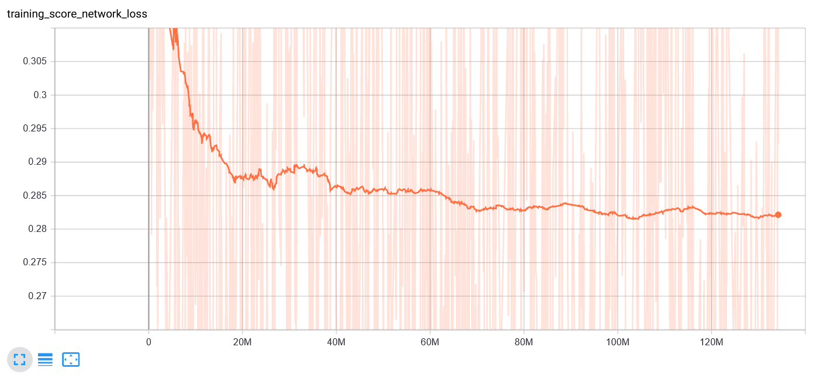

Denoising Diffusion Probabilistic Models
An Exposition
The denoising diffusion probabilistic model (DDPM) is a type of generative models that became a very popular research topic in 2021 and 2022. This article attempts to explain what the model does with an example.
1 The Generative Modeling Problem
For the problem of generative modeling, we are given a bunch of data points; for examples, the following collection of 100 numbers.
| 2.032, 2.067, -0.163, 1.942, -0.036, -0.996, 1.994, -2.007, -2.119, -1.984, 1.910, -0.864, 1.110, 1.052, 1.107, -1.987, -1.002, -0.116, -1.959, 2.009, 1.026, 1.105, -1.018, 2.026, -2.207, 0.040, 0.864, 1.795, -1.942, -0.958, 1.907, -2.091, -0.986, 2.079, -0.132, -1.967, 1.041, -0.143, -1.065, -2.002, -1.915, 2.027, 0.022, -1.027, -1.923, 2.079, -2.121, -1.923, -1.997, -2.077, 0.915, -0.970, -0.134, -2.152, 2.089, -2.020, -0.861, -0.177, -0.973, 1.995, 2.196, 1.066, -2.020, -1.992, 0.986, -1.920, 0.042, -0.001, 1.985, -1.858, 0.844, -2.187, -1.079, -2.018, 0.039, 0.007, -0.243, 1.037, -0.987, 1.924, -2.065, 1.733, -2.141, 1.957, -2.081, 0.100, 0.854, -1.038, -0.121, 0.023, -0.005, 1.867, 2.096, -0.126, 0.043, -0.092, 1.026, 1.161, -1.054, 2.027 |
Our task is to generate new data points that look just like them. What we mean by this is that the data—$\ve{x}_1$, $\ve{x}_2$, $\dotsc$, $\ve{x}_N \in \Real^d$—that are given to us are sampled i.i.d. from a probability distribution $p_\data(\ve{x})$. In fact, the above numbers were generated by sampling a mixture of five 1D Gaussian distributions whose variances are all $\sigma^2 = 0.01$ and whose means are integers in the range $[-2,2]$: \begin{align} p_\data(x) = \frac{1}{5}\sum_{\mu = -2}^{2} \mcal{N}(x; \mu, 0.01). \label{sample-pdata-1} \end{align} The PDF of the distribution is depicted below.

|
Being given just only the data points, $p_\data$ is unknonwn to us. Our task is to somehow approximate this unknown distribution and generate new samples from it.
For a 1D dataset above, the problem is quite easy. We may observe that the numbers lie in the range $[-2.5,2.5]$. We can then divide this range into a number of buckets and create a histogram out of the data. Here is a histogram with 25 bins.
|  |
If we generate samples from each bucket according to the frequency the histogram tells us, we would get samples that look sort of like they come from $p_\data$. As the number of data points increase and as we subdivide the interval into more and more buckets, the histogram would approach the PDF, our samples would look more and more "real," and our random process would converge to $p_\data$ in the limit.
Of course, the problem is not this simple in general. We may deal with data items that are images, sound clips, or other objects that come from spaces with thousands and millions of dimensions. High dimensionality makes it infeasible to create any kind of histograms, and we have to do something else.
2 Denoising Diffusion Probabilistic Models
The DDPM is an approach to solve generative modeling (i.e., it is a "generative model"). It was first proposed by Sohl-Dickstein et al. in their ICML 2015 paper titled "Deep Unsupervised Learning Using Nonequilibrium Thermodynamics" [LINK] but was recently popularized by the NeurIPS 2020 paper "Denoising Diffusion Probabilistic Models" by Ho, Jain, and Abbeel [LINK]. The general idea goes as follows:
| Given any distribution $p_{\mrm{data}}$, there exists a multi-step process that transforms it to the isotropic Gaussian distribution $\mcal{N}(\ve{0}, I)$. So, by carefully reversing this process, one can start from $\mcal{N}(\ve{0}, I)$ and arrive at any desired distribution $p_{\mrm{data}}$. |
2.1 The Forward Process
The process that transforms any distribution $p_{\mrm{data}}$ into $\mcal{N}(\ve{0}, I)$ is called the forward process or the diffusion process. The Ho et al. paper uses a Markov chain $\ve{x}^{(0)}$, $\ve{x}^{(1)}$, $\ve{x}^{(2)}$, $\dotsc$, $\ve{x}^{(T)}$ with $T = 1000$ with the following properties.
- $\ve{x}^{(0)} \sim p_{\mrm{data}}$.
- $\ve{x}^{(t)} \sim \mcal{N}(\sqrt{1 - \beta_t}\ve{x}^{(t-1)}, \beta_t I)$ for all $1 \leq t \leq T$.
Here $\beta_1$, $\beta_2$, $\dotsc$, $\beta_T$ are a collection of constants called the variance schedule because they are the variances of the Gaussian distributions in the steps of the Markov chain. Ho et al. uses a linear progression where $\beta_1 = 10^{-4}$ and $\beta_T = 0.02$
From the second property above, we can write $\ve{x}^{(t)}$ in terms of $\ve{x}^{(t-1)}$ as follows: \begin{align*} \ve{x}^{(t)} = \sqrt{1 - \beta_t}\ve{x}^{(t-1)} + \sqrt{\beta_t} \ves{\xi} \end{align*} where $\ves{\xi} \sim \mcal{N}(\ve{0},I)$. We can see that each step of the Markov chain scales the result of the previous step down by a little and also adds a little noise to it. The cumulative effect of the steps should be that the influence of the original sample $\ve{x}^{(0)}$ should wane as time passes, and the noise should eventually dominates.
In fact, one can prove the following proposition.
| Proposition 1. Let $\alpha_t = 1 - \beta_t$ and $\overline{a}_t = \prod_{s=1}^t \alpha_s$. Then, for any $1 \leq t \leq T$, \begin{align*} p(\ve{x}^{(t)} | \ve{x}^{(0)}) = \mcal{N}(\ve{x}^{(t)}; \sqrt{\overline{\alpha}_t} \ve{x}_0, (1 - \overline{\alpha}_t) I). \end{align*} |
To see why the forward process can turn any probability distribution $p_{\mrm{data}}$ to $\mcal{N}(\ve{0},I)$, note that \begin{align*} \overline{\alpha}_T &= \prod_{s=1}^{T} \alpha_s = \prod_{s=1}^{T} (1 - \beta_s) = \prod_{s=1}^{T} \bigg(1 - \bigg[ 10^{-4} + (0.02 - 10^{-4}) \frac{s-1}{T-1} \bigg] \bigg). \end{align*} When $T = 1000$, we have that $\overline{\alpha}_T \approx 10^{-4.385}$. As a result, \begin{align*} p(\ve{x}^{(T)} | \ve{x}^{(0)}) \approx N(\ve{x}^{(T)}; 10^{-2.192} \ve{x}^{(0)}, (1 - 10^{-4.385}) I). \end{align*} So, unless $10^{-2.192} \ve{x}^{(0)}$ is not close to $\ve{0}$, the conditional distribution $p(\ve{x}^{(T)} | \ve{x}^{(0)})$ would be close to $\mcal{N}(\ve{0}, I).$ If all of the components of $\ve{x}^{(0)}$s are small, then $\ve{x}^{(T)}$'s distribution would be close to $\mcal{N}(\ve{0}, I)$. This is always the case when $p_{\mrm{data}}$ is a distribution of images, in which case each component of $\ve{x}^{(0)}$ would be in range $[0,1]$.
Of course, the forward process does not work when $\ve{x}^{(0)}$ can have large components. However, this can be fixed easily by increasing $T$. When $T = 10000$, we have that $\overline{\alpha}_T \approx 10^{-43.931}$, and it would allow us to handle more distributions.
Let's see the forward process in action. The following figure shows what it does to 100,000 data points sampled from $\eqref{sample-pdata-1}$.
| |||||||||||
| Figure 2.1.1 The effect of the forward process on data points sample from $\ve{p}_{\mrm{data}}$ in $\eqref{sample-pdata-1}$ after $t = 0, 100, 200, \dotsc, 1000$ timesteps. |

{kind=link}
{kind=link}
{kind=link}
{kind=link}
{kind=link}
I also made a video out of this.
Figure 2.1.2 A video showing the effect of the forward process on data points sample from $\ve{p}_{\mrm{data}}$ in $\eqref{sample-pdata-1}$ at different timesteps.
One does see that the distribution slowly degrades to the normal distribution $\mcal{N}(0,1)$. One may also notice that the transformation is much more dramatic in the first half, and the distribution becomes quite close to $\mcal{N}(0,1)$ already by $t=500$. This is somewhat surprising if we look at the the plots of $\sqrt{\overline{\alpha}_t}$ and $\sqrt{1 - \overline{\alpha}_t}$ against $t$.
{kind=link}
{kind=link}
The value of $\sqrt{\overline{\alpha}_{500}}$ is about $0.28$, so I kind of expected that the lobe would have a flatter top at $t = 500$.
We have seen what the forward process does to data samples. It is also useful to see what it mathematically does to a probability distribution. Because \begin{align*} \ve{x}^{(t)} \sim \mcal{N}( \sqrt{\overline{\alpha}_t} \ve{x}^{(0)}, \sqrt{1 - \overline{\alpha}_t} I), \end{align*} we may write \begin{align*} \ve{x}^{(t)} = \sqrt{\overline{\alpha}_t} \ve{x}^{(0)} + \sqrt{1 - \overline{\alpha}_t} \ves{\xi} \end{align*} where $\ves{\theta} \sim \mcal{N}(\ve{0},I)$. Because of the distribution of $\sqrt{1 - \overline{\alpha}_t} \ves{\xi}$ is simply $\mcal{N}(\ve{0}, (1-\overline{\alpha}_t)I)$, the distribution of $\ve{x}^{(t)}$ is given by \begin{align*} p(\ve{x}^{(t)}) = \int p_{\mrm{data}}(\ve{x}^{(0)}) \mcal{N}(\ve{x}^{(t)} - \sqrt{\overline{\alpha}_t} \ve{x}^{(0)}; \ve{0}, \sqrt{1 - \overline{\alpha}_t} I) \, \dee \ve{x}^{(0)}. \end{align*} We cannot evaluate the above expression because $p_{\mrm{data}}$ is not specified.
An important special case is when $p_{\mrm{data}}$ is an isotropic Gaussian $\mcal{N}(\ves{\mu}, \sigma^2 I)$. Here, we have that \begin{align*} \sqrt{\overline{\alpha}_t} \ve{x}^{(0)} \sim \mcal{N}(\sqrt{\overline{\alpha}_t} \ves{\mu}, \overline{\alpha}_t\sigma^2 I). \end{align*} Since $\sqrt{\overline{\alpha}_t} \ve{x}^{(0)}$ is a Gaussian, we have that $\ve{x}^{(t)} = \sqrt{\overline{\alpha}_t} \ve{x}^{(0)} + \sqrt{1 - \overline{\alpha}_t} \ves{\xi}$ is also a Gaussian. In particular, \begin{align*} \ve{x}^{(t)} \sim \mcal{N}(\sqrt{\overline{\alpha}_t} \ves{\mu} + \ves{0}, \overline{\alpha}_t\sigma^2 I + (1 - \overline{\alpha}_t) I ) = \mcal{N}(\sqrt{\overline{\alpha}_t} \ves{\mu}, (1 - (1 - \sigma^2)\overline{\alpha}_t) I ). \end{align*}
Applying the above reasoning to $p_{\mrm{data}}$ in $\eqref{sample-pdata-1}$, we have that \begin{align*} p(x^{(t)}) = \frac{1}{5} \sum_{\mu=-2}^2 \mcal{N}(x^{(t)}; \sqrt{\overline{\alpha}_t}\mu, 1 - 0.99\overline{\alpha}_t). \end{align*} You can see how the distribution changes in the following video.
| Figure 2.1.3 The effect of the forward process on the probability distribution $p_{\mrm{data}}$ in $\eqref{sample-pdata-1}$. On the right graph, the Gaussians in the mixture are also visualized. |
2.2 The Backward Process
Recall that each step of the forward process only changes the sample by a little by scaling it down by a factor close to $1$ and adding a little noise. As a result, through machine learning, it should be possible to revert each of the steps. If we can do so, we can start by sampling $\ve{x}^{(T)}$ from $\mcal{N}(\ve{0}, I)$. Then, we revert the forward process one step at a time to obtain $\ve{x}^{(T-1)}$, $\ve{x}^{(T-2)}$, $\ve{x}^{(T-3)}$ and so on until we finally get $\ve{x}^{(0)}$, which will be distributed according to $p_{\mrm{data}}$.
2.2.1 Reverting the Forward Process
How to revert the forward process is not straightforward. The Ho et al. paper goes through a long derivation to derive the appropriate loss function to train the neural network for this purpose. We do not want to go through that derivation again because it is very tedious and does not offer an explanation of what's actually going on underneath. Instead, we will offer a less rigourous explanation that I think is more insightful.
Our derivation is based on the following theorem.
| Theorem 2 (Tweedie's formula). Let $\ve{x}$ and $\ve{y}$ be random variables such that $\ve{y} \sim \mcal{N}(\ve{x}, \sigma^2 I)$. Then, \begin{align*} E[\ve{x}|\ve{y}] = \ve{y} + \sigma^2 \nabla \log p(\ve{y}). \end{align*} |
You can find a proof in lecture notes about the exponential family of probability distributions; for example, this one.
The quantity \begin{align*} \nabla \log p(\ve{y}) = \frac{\partial (\log p(\ve{y}))}{\partial \ve{y}} = \frac{1}{p(\ve{y})} \frac{\partial p(\ve{y})}{\partial \ve{y}} \end{align*} is called the score of $p(\ve{y})$.
Now, consider a step of the forward process. We have that $\ve{x}^{(t)} \sim \mcal{N}(\sqrt{1 - \beta_t} \ve{x}^{(t-1)}, \beta_t I)$. Applying Tweedie's formula to $\ve{x}^{(t)}$ and $\sqrt{1 - \beta_t} \ve{x}^{(t-1)}$, we have that \begin{align*} E[\sqrt{1 - \beta_t} \ve{x}^{(t-1)}|\ve{x}^{(t)}] = \ve{x}^{(t)} + \beta_t \nabla \log p(\ve{x}^{(t)}). \end{align*} In other words, \begin{align*} E[\ve{x}^{(t-1)}|\ve{x}^{(t)}] = \frac{\ve{x}^{(t)} + \beta_t \nabla \log p(\ve{x}^{(t)})}{\sqrt{1 - \beta_t}}. \end{align*} In other words, if we end up sampling $\ve{x}^{(t-1)}$ from a distribution that depends on $\ve{x}^{(t)}$, we had better make sure that the mean of this distribution is the RHS of the above equation. The Ho et al. paper actually ends up defining a Markov chain $\ve{x}^{(T)}$, $\ve{x}^{(T-1)}$, $\dotsc$, $\ve{x}^{(0)}$ where \begin{align*} \ve{x}^{(t-1)} \sim \mcal{N}\bigg( \frac{\ve{x}^{(t)} + \beta_t \nabla \log p(\ve{x}^{(t)})}{\sqrt{1 - \beta_t}}, \beta_t I \bigg). \end{align*} The variance $\beta_t$ was determined through experimentation.
To summarize, if we can compute the score $\nabla \log p(\ve{x}^{(t)})$ of $\ve{x}^{(t)}$, we would be able to revert the forward process and sample according to $p_{\mrm{data}}$.
2.2.2 Getting Familiar with the Score
Before we go ahead and figure out how to compute the score, let us get more familiar with it by computing it for our example data distribution. Since $\eqref{sample-pdata-1}$ is a sum of Gaussians, it is useful to see what the score of a Gaussian distribution looks like. For an isotropic Gaussian $\mcal{N}(\ves{\mu}, \sigma^2 I)$, we have that \begin{align*} \mcal{N}(\ve{x}; \ves{\mu}, \sigma^2 I) &= \frac{1}{(\sqrt{2\pi}\sigma)^d} \exp\bigg(\frac{-\| \ve{x} - \ves{\mu} \|^2}{2\sigma^2}\bigg). \end{align*} So, \begin{align*} \nabla \log \mcal{N}(\ve{x}; \ves{\mu}, \sigma^2 I) &= \frac{\dee}{\dee \ve{x}} \log \bigg( \frac{1}{(\sqrt{2\pi}\sigma)^d} \exp\bigg(\frac{-\| \ve{x} - \ves{\mu} \|^2}{2\sigma^2}\bigg) \bigg) \\ &= \frac{\dee}{\dee \ve{x}} \bigg( \log \frac{1}{(\sqrt{2\pi}\sigma)^d} + \log \exp\bigg(\frac{-\| \ve{x} - \ves{\mu} \|^2}{2\sigma^2}\bigg) \bigg) \\ &= \frac{\dee}{\dee \ve{x}} \bigg( \frac{-\| \ve{x} - \ves{\mu} \|^2}{2\sigma^2}\bigg) \\ &= -\frac{\ve{x} - \ves{\mu}}{\sigma^2}. \end{align*}
If the forward process works, the distribution $p(\ve{x}^{T})$ should be close to the Gaussian $\mcal{N}(\ve{0}, I)$. Hence, its score $\nabla \log p(\ve{x}^{T})$ should be close to $-\ve{x}$. In 1D, this is use $p(x^{(t)}) = -x$.
I do not know of a closed-form formula for the score of a mixture of Gaussians like that in $\eqref{sample-pdata-1}$ because it would involve taking the logarithm of a weighted sum of Gaussians. The score of the probability distribution in $\eqref{sample-pdata-1}$, numerically computed, is as follows.
{kind=link}
Figure 2.2.2.1 The score of the $p_{\mrm{data}}$ in $\eqref{sample-pdata-1}$.
You can observe how the score of $\ve{p}_{\mrm{data}}$ changes as the forward process corrupts it in the video below.
Figure 2.2.2.2 The score of $p_{\mrm{data}}$ in $\eqref{sample-pdata-1}$ as it gets corrupted by the forwad process.
As expected, the score gradually changes from the function in Figure 2.2.2.1 to the function $-x$.
2.2.3 Estimating the Score
Let's get back to how to estimate the score. Our solution would be to train a neural network $\ve{s}_\ves{\theta}(\cdot, \cdot)$ with parameters $\ves{\theta}$ to compute it. More specifically, we want $\ve{s}_{\ves{\theta}}(\ve{x}^{(t)}, t)$ to give a good approximation to $\nabla \log p(\ve{x}^{(t)})$.
Training such a network relies on a result that Pascal Vincent describes in his 2011 paper called "A connection between score matching and denoising autoencoders" [LINK].
| Theorem 3 (Vincent 2011). Let all samples be members of $\Real^d$. Let $\ve{x} \sim p_{\mrm{data}}$, $\ve{y} \sim \mcal{N}(\ve{x}, \sigma^2 I)$, and $\ve{f}_\ves{\theta}: \Real^d \rightarrow \Real^d$ be a neural network with parameters $\ves{\theta}$. Moreover, let \begin{align*} J^\sigma(\ves{\theta}) = E_{\ve{x} \sim p_{data},\ \ves{\xi} \sim \mcal{N}(0,I)} \Big[ \| \ves{\xi} + \sigma \ve{f}_\ves{\theta}(\ve{x} + \sigma \ves{\xi}) \|^2_2 \Big]. \end{align*} Then, \begin{align*} \argmin_{\ves{\theta}} J^\sigma(\ves{\theta}) = \argmin_\ves{\theta} E_{\ve{x} \sim p_{data},\ \ve{y} \sim \mcal{N}(\ve{x}, \sigma^2)} \Big[ \big\| f_{\ves{\theta}}(\ve{y}) - \nabla \log p(\ve{y}) \big\|_2^2 \Big]. \end{align*} |
The result says that, by optimizing for the loss function $J^\sigma(\ves{\theta})$ that does not involve computing any probabilities at all, we end up optimizing the neural network to compute the score $\nabla \log p(\ve{y})$ of $\ve{y}$.
Now, let us apply the above result to our problem. From Proposition 1, we have that \begin{align*} \ve{x}^{(t)} \sim \mcal{N}(\sqrt{\overline{\alpha}_t} \ve{x}^{(0)}, (1 - \overline{\alpha}_t) I). \end{align*} Let $p^t_{\mrm{data}}$ denote the probability distribution of $\sqrt{\overline{\alpha}_t} \ve{x}^{(0)}$. Now, we can apply Theorem 3, by making the following substitutions.
- Substitute $\ve{x}$ with $\sqrt{\overline{\alpha}_t} \ve{x}^{(0)}$.
- Substitute $p_{\mrm{data}}$ with $p^t_{\mrm{data}}$.
- Substitute $\ve{y}$ with $\ve{x}^{(t-1)}$.
- Substitute $\sigma^2$ with $1 - \overline{\alpha}_t$.
- Substitute $\ve{f}_\ves{\theta}(\cdot)$ with $\ve{s}_\ves{\theta}(\cdot, t)$
We will have that, by solving the optimization problem \begin{align} \ves{\theta}^* = \argmin_{\ves{\theta}} E_{ \sqrt{\overline{\alpha}_t} \ve{x}^{(0)} \sim p^t_{\mrm{data}},\ \ves{\xi} \sim \mcal{N}(\ve{0},I)} \Big[ \Big\| \ves{\xi} + \sqrt{1 - \overline{\alpha}_t} \ve{s}_\ves{\theta}(\sqrt{\overline{\alpha}_t} \ve{x}^{(0)} + \sqrt{1 - \overline{\alpha}_t} \ves{\xi}, t) \Big\|^2_2 \Big], \label{ddpm-loss-prelim} \end{align} we will end up with a network $\ve{s}_{\ves{\theta}^*}$ such that $\ve{s}_{\ves{\theta}^*}(\ve{x}^{(t)}, t)$ would give a good approximation of $\nabla \log p(\ve{x}^{(t)})$.
However, there are still two problems with the optimization problem in $\eqref{ddpm-loss-prelim}$. The first is that we can simplify it further. Sampling $\sqrt{\overline{\alpha}_t} \ve{x}^{(0)}$ from $p^t_{\mrm{data}}$ is the same as sampling $\ve{x}^{(0)}$ from $p_{\mrm{data}}$ and then multiplying it with $\sqrt{\overline{\alpha}_t}$. As a result, we can apply the law of the unconcious statistician (LOTUS) to rewrite the problem as: \begin{align*} \argmin_{\ves{\theta}} E_{ \ve{x}^{(0)} \sim p_{\mrm{data}},\ \ves{\xi} \sim \mcal{N}(\ve{0},I)} \Big[ \Big\| \ves{\xi} + \sqrt{1 - \overline{\alpha}_t} \ve{s}_\ves{\theta}(\sqrt{\overline{\alpha}_t} \ve{x}^{(0)} + \sqrt{1 - \overline{\alpha}_t} \ves{\xi}, t) \Big\|^2_2 \Big]. \end{align*} The second problem is that the loss function only applies for a single value of $t$. However, we need our network to work for all $t = 1, 2, \dotsc, T$. So, let us add loss terms for all of them to arrive at \begin{align} \argmin_{\ves{\theta}} \frac{1}{T} \sum_{t=1}^T E_{ \ve{x}^{(0)} \sim p_{\mrm{data}},\ \ves{\xi} \sim \mcal{N}(\ve{0},I)} \Big[ \Big\| \ves{\xi} + \sqrt{1 - \overline{\alpha}_t} \ve{s}_\ves{\theta}(\sqrt{\overline{\alpha}_t} \ve{x}^{(0)} + \sqrt{1 - \overline{\alpha}_t} \ves{\xi}, t) \Big\|^2_2 \Big]. \label{ddpm-loss} \end{align} Now, if we find the solution $\ve{\theta}^*$ to this optimziation problem, we will have that $\ve{s}_{\ves{\theta}^*}(\ve{x}^{(t)}, t)$ would be a good approximation for $\nabla \log p(\ve{x}^{(t)})$ for all $t = 1, 2, \dotsc, T$.
2.3 Summary of DDPM
First, we will train a network $\ve{s}_\ves{\theta}$ so that $\ve{s}_\ves{\theta}(\ve{x}^{(t)}, t)$ would estimate the score $\nabla \log p(\ve{x}^{(t)})$ of $\ve{x}^{(t)}$. The training algorithm would be as follows.
| Training algorithm for $\ve{s}_\ves{\theta}$. |
|
After we have trained the network, we can then use it to sample from $p_{\mrm{data}}$ with the following algorithm.
| Sampling |
|
3 A Toy Implementation
3.1 Network Architecture
I implemented a DDPM to sample from the distribution in $\eqref{sample-pdata-1}$. My score network is a multi-layer perceptron (MLP) whose architecture is given in the figure below.
{kind=link}
Figure 3.1.1 Architecture of the score network.
First, the time step $t$ is converted to a vector of size 128 though the positional embedding procedure commonly used in transformer models [Vaswani et al. 2017`]. \begin{align*} \text{embedding}(t) = \begin{bmatrix} \sin(\omega_1 t) \\ \cos(\omega_1 t) \\ \sin(\omega_2 t) \\ \cos(\omega_2 t) \\ \vdots \\ \sin(\omega_{64} t) \\ \cos(\omega_{64} t) \end{bmatrix} \end{align*} where $\omega_k = 1/10000^{2k/128}$. Note that this embedding is also used by the Ho et al. paper.
The embedding is then concatenated with $x^{(t)}$ to form a 129-dimensional vector. The result is then passed through 6 hidden layers. Each has 256 units and is a fully connected layer followed by a leaky ReLU non-linearity. The output of the last hidden layer is converted to a single number with a fully-connected layer (no non-linearity this time). The result is divided by $\sqrt{1 - \overline{\alpha}_t}$ before being outputted by the network.
3.2 Division by $\sqrt{1 - \overline{\alpha}_t}$
The division by $\sqrt{1 - \overline{\alpha}_t}$ makes training the score network much easier. Let $\widetilde{\ve{s}}_{\ves{\theta}}(\cdot, \cdot)$ denotes the penultimate output of the score network before the division. We have that \begin{align*} \ve{s}_{\ves{\theta}}(\ve{x}^{(t)}, t) = \frac{\widetilde{s}_{\ves{\theta}}(\ve{x}^{(t)}, t)}{\sqrt{1 - \overline{\alpha}_t}}. \end{align*} We can plug $\widetilde{\ve{s}}$ into the training objective $\eqref{ddpm-loss}$, and the objective would become \begin{align*} &\argmin_{\ves{\theta}} \frac{1}{T} \sum_{t=1}^T E_{ \ve{x}^{(0)} \sim p^t_{\mrm{data}},\ \ves{\xi} \sim \mcal{N}(\ve{0},I)} \Big[ \Big\| \ves{\xi} + \sqrt{1 - \overline{\alpha}_t} \ve{s}_\ves{\theta}(\sqrt{\overline{\alpha}_t} \ve{x}^{(0)} + \sqrt{1 - \overline{\alpha}_t} \ves{\xi}, t) \Big\|^2_2 \Big] \\ &= \argmin_{\ves{\theta}} \frac{1}{T} \sum_{t=1}^T E_{ \ve{x}^{(0)} \sim p^t_{\mrm{data}},\ \ves{\xi} \sim \mcal{N}(\ve{0},I)} \bigg[ \bigg\| \ves{\xi} + \sqrt{1 - \overline{\alpha}_t} \frac{\ve{s}_\ves{\theta}(\sqrt{\overline{\alpha}_t} \ve{x}^{(0)} + \sqrt{1 - \overline{\alpha}_t} \ves{\xi}, t)}{\sqrt{1 - \overline{\alpha}_t}} \bigg\|^2_2 \bigg] \\ &= \argmin_{\ves{\theta}} \frac{1}{T} \sum_{t=1}^T E_{ \ve{x}^{(0)} \sim p^t_{\mrm{data}},\ \ves{\xi} \sim \mcal{N}(\ve{0},I)} \Big[ \Big\| \ves{\xi} + \widetilde{\ve{s}}_\ves{\theta}(\sqrt{\overline{\alpha}_t} \ve{x}^{(0)} + \sqrt{1 - \overline{\alpha}_t} \ves{\xi}, t) \Big\|^2_2 \Big]. \end{align*} Notice that the $\sqrt{1 - \overline{\alpha}_t}$ before $\widetilde{\ve{s}}_{\ves{\theta}}$ is now gone. In effect, we are training the $\widetilde{\ve{s}}_{\ves{\theta}}$ to predict $-\ves{\xi}$, which is the negative of the noise that is used to corrupt $\ve{x}^{(0)}$. The training becomes easier because the average magnitude of each component of $\ves{\xi}$ (i.e., the standard deviation) is $1$ and does not change with $t$, so the network only has to learn to output vectors of such magnitude regardless of the value of $t$. On the contrary, if we were to train the score network directly with the objective with no division by $\sqrt{1 - \overline{\alpha}_t}$, the network would have to learn to output vectors of different magnitudes for different time steps. The magnitude gap between the time steps can be very large because $$\frac{1}{\sqrt{1 - \overline{\alpha}_1}} = \frac{1}{\sqrt{1 - (1 - 10^{-4})}} = \frac{1}{\sqrt{10^{-4}}} = \frac{1}{10^{-2}} = 100,$$ but \begin{align*} \frac{1}{\sqrt{1 - \overline{\alpha}_{1000}}} \approx \frac{1}{\sqrt{1 - 10^{-4.385}}}\approx 1. \end{align*}
In fact, the Ho et al. paper does not try to estimate the score at all. It trains a network $\ves{\epsilon}_{\ves{\theta}}(\ve{x}^{(t)}, t)$ that predicts the noise $\ve{\xi}$ that was used to create $\ve{x}^{(t)}$. The training objective is \begin{align*} \argmin_{\ves{\theta}} \frac{1}{T} \sum_{t=1}^T E_{ \ve{x}^{(0)} \sim p^t_{\mrm{data}},\ \ves{\xi} \sim \mcal{N}(\ve{0},I)} \Big[ \Big\| \ves{\xi} - \ves{\epsilon}_\ves{\theta}(\sqrt{\overline{\alpha}_t} \ve{x}^{(0)} + \sqrt{1 - \overline{\alpha}_t} \ves{\xi}, t) \Big\|^2_2 \Big]. \end{align*} The objectives are equivalent because it is clear that
| $$ -\frac{\ve{s}_{\ves{\theta}}(\ve{x}^{(t)}, t)}{\sqrt{1 - \overline{\alpha}_t}} \qquad $$ | is equivalent to | $$ \qquad \ves{\epsilon}_{\ves{\theta}}(\ve{x}^{(t)}, t) $$ |
3.3 Training Details
I generated data for training the score network by sampling 100,000 data points from the sample distribution $\eqref{sample-pdata-1}$.
The weights of the network was initialized with Kaiming He's initialization method. I trained the network with the Adam algorithm with $\beta_1 = 0.5$ and $\beta_2 = 0.999$. The batch size was 256. The learning was $10^{-4}$ for the first $2^{24}$ examples shown, $3 \times 10^{-5}$ for the next $2^{24}$ examples, and $10^{-5}$ for the next $2^{24}$ examples. Then, the learning rate linearly decreases from $10^{-5}$ to $10^{-6}$ for the next $5 \times 10^{24}$ examples, at which point the training finished. In total, the network was shown about $8 \times 2^{24} \approx 134$ million training examples. So the network was trained on for more than 1340 epochs. Training took about 1 hour on a Titan RTX GPU.
The training loss as a function of examples shown to the network is depicted below.
|  |
| Figure 3.3.1 The training loss of the score network. The graph was created with TensorBoard with a smoothing factor of 0.999. |
{kind=link}
3.4 Results
I'm happy to report that I think my implementation was correct. I sampled $100,000$ numbers from the standard normal distribution $\mcal{N}(0,1)$ and ran the backward process. The resulting histogram of the transformed data is given below long with the probability distribution that it is supposed to approximate.
| ||||
| Figure 3.4.1 (a) The histogram of data points obtained by first sampling $100,000$ numbers from $\mcal{N}(0,1)$ and running the backward process on them. (b) The $p_{\mrm{data}}$ described in $\eqref{sample-pdata-1}$ that was used to generate the training dataset. |
{kind=link}
{kind=link}
We can see that there's a good agreement between the actual distribution and the target distribution. I also created a video showing the histograms as $t$ goes from 1000 to 1. To the right, the score predicted by the score network (blue) and the ground truth (red) are shown
| Figure 3.4.2 A video showing how the histograms of sampled data as the backward process progresses on the left and the scores compute the score network (blue) and the ground truth score (red) on the right. |
One can see that the backward process can use a lot of improvement. For one thing, it can be much shorter because the distributions are very close to the standard normal distribution during the first half of the whole process. Improvement, though, is not in the scope of this particular article, but I'm pretty sure there's research paper on this topic already.
Last modified: 2022/08/14